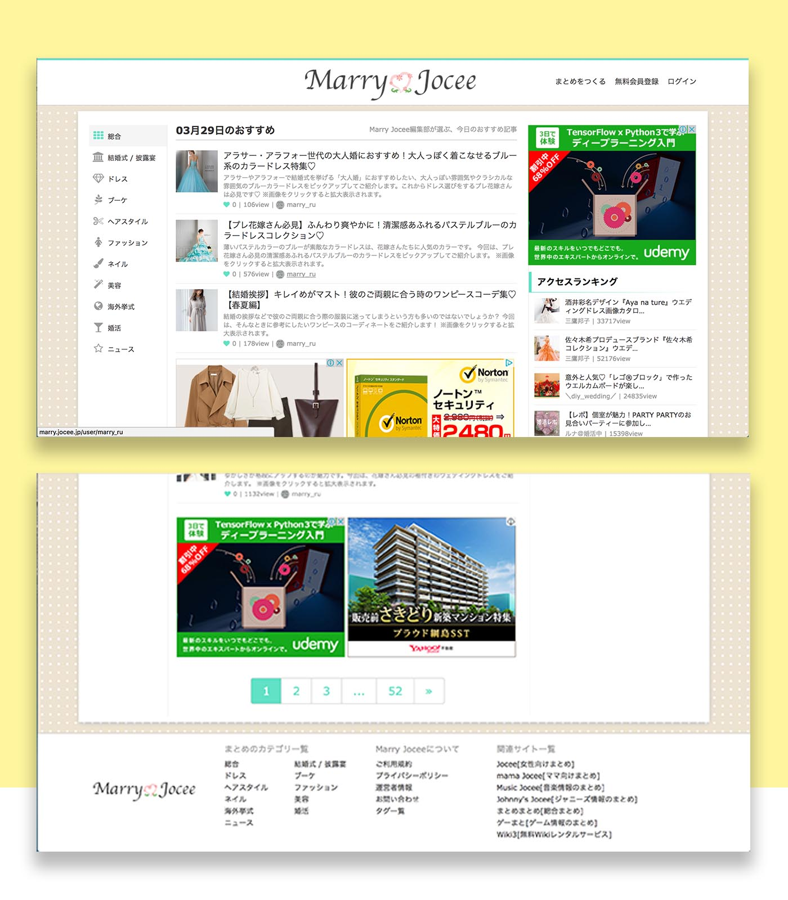

Problem
Curration site is one of the form of user-generated content. People can post their own idea there or simply summarize and share form another news site. It is simple, yet a useful site. However, it could be a little bit overwhelming because the richness of the contents.
There are 2 principle that I have in mind when I redesign this page. First is to avoid redundant content and second is I want the visitor can get the information they need easily. They don't have to dig deep into the site just to get information about the latest trend of wedding dress.
Let's take a look of the current site.

- There's this category on the left-side side bar. The right-side bar contains tag and other trending articles. No search panel found.
- There's several navigations and the conversion button (login or sign up) but it's not clearly emphasized.
- The page is too long, but the both of the sidebars is not long enough, it looks a bit empty.
- There's another category in the footer. Too many information in the footer.